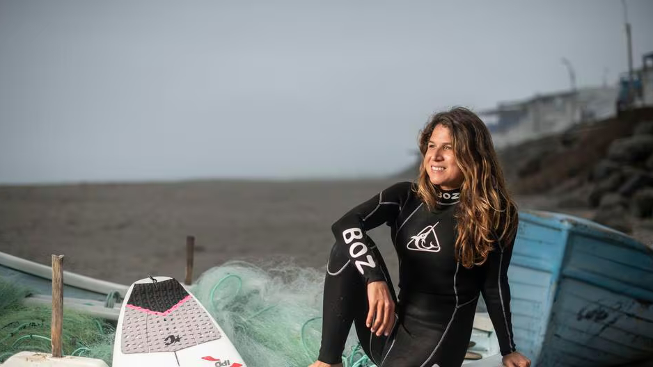

Sofía Mulánovich, nacida en Lima el 24 de junio de 1983, es una surfista peruana que ha dejado una marca imborrable en el mundo del surf. En 2004, se convirtió en la primera surfista peruana en ganar el prestigioso Campeonato Mundial de Surf de la ASP, celebrado en Fiji. Este logro la catapultó a la fama internacional.
A lo largo de su carrera, Mulánovich ha acumulado numerosos logros, incluida una medalla de oro en los Juegos Panamericanos de Lima 2019. Además de su título mundial, ha obtenido múltiples victorias en el Circuito Mundial de Surf de la ASP, consolidándose como una de las mejores surfistas del mundo.
En reconocimiento a sus contribuciones al deporte, Sofía Mulánovich fue incluida en el Salón de la Fama del Surf Peruano en 2011, donde su legado sigue inspirando a las generaciones futuras de surfistas peruanos y de todo el mundo.
